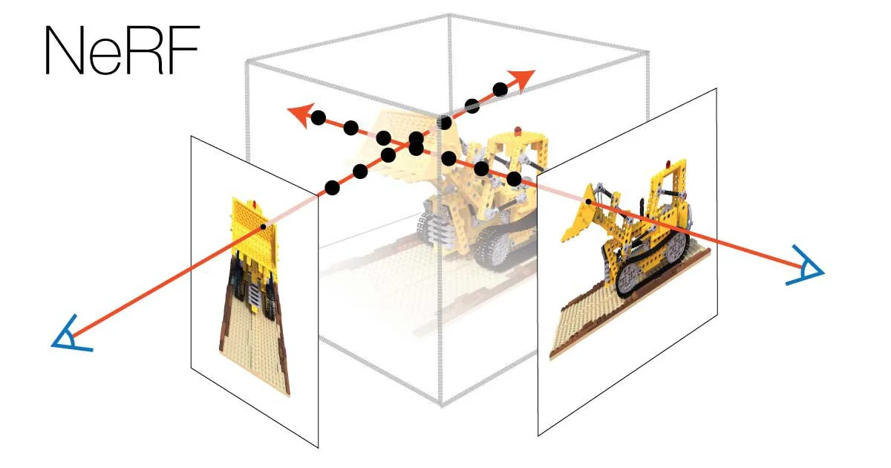

Stock Trading

I started this project in December of 2023 because I wanted to develop my quantitative analysis skills and learn how to trade stocks. I used Python to scrape data from the Yahoo Finance website and used Pandas to clean and analyze the data. Taking to the internet, I was able to learn about many technical indicators and different types of strategies and how to use them to make trading decisions. Most of my time was spent backtesting custom strategies and comparing them to the NASDAQ 100 index. Through lots of trail and error I was able to find a momentum and mean reversion hybrid strategy that performed well on historical data and surpasses the yearly return of the NASDAQ 100. I then took time to learn how I could implement the strategy into a real life trading account. Using my Charles Schwab brokerage account, a schwab api cloned from a public github repo, and a local server at home I was able to automate my trading strategy. Thus far, my trading strategy has made over 60% of profit and has greatly surpassesd the yearly return of the NASDAQ 100. I have taken a break from this trading project for the time being but I am excited to continue working on it in the future.
NeRF Video Creation
I started this project in October of 2024 because I met a graduate student through my professor that asked if I wanted to learn start a project with him using Neural Radiance Fields and computer graphics. Taking a weekend to research NeRF and the current research in the field I found the topic incredibly interesting decided a project on the topic was a good idea. I've spent the past 3 months researching the current best algorithms, both in python and in cuda, and learning the theory behind them. I've also been researching numerous optimization techniques, primarily cuda implementations, and learning how to use them and how they can be applied to our project. In the mean time, my new friend was working on creating a video of 3D models generated from a version of NeRF on a public github repo. This project has been a great learnig experience for understanding gpu acceleration using cuda and learning the theory behind NeRF. I am excited for the potential of this project and am looking forward to continuing collaboration with my new friend.